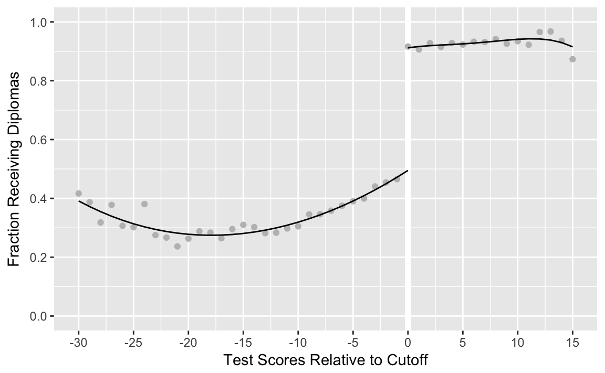
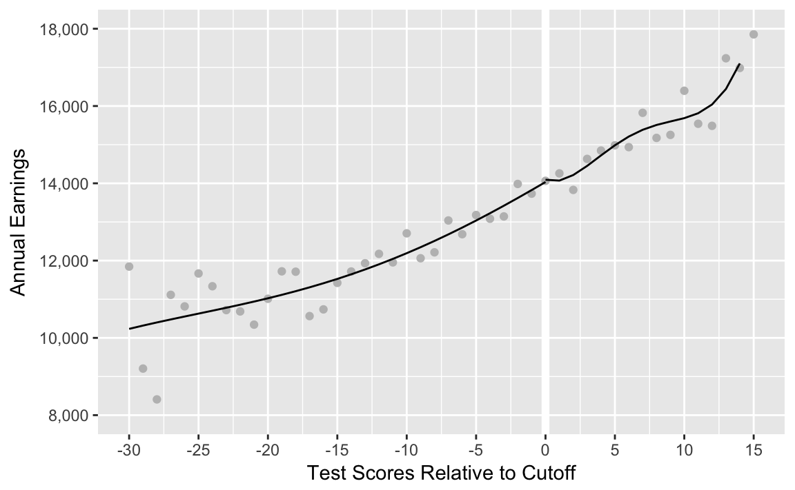

10 Sheepskin and Returns to Schooling
This replicates Figures 6.3 and 6.4 of Mastering ’Metrics. These analyses use a fuzzy RD design to analyze the “sheepskin effects” of a high school diploma (Clark and Martorell 2014).
library("tidyverse")Load sheepskin data.
data("sheepskin", package = "masteringmetrics")Create indicator variable for passing the test.
sheepskin <- mutate(sheepskin, test_lcs_pass = (minscore >= 0))10.1 Figure 1
Figure 1. Regression discontinuity
mod1_lhs <- lm(receivehsd ~ poly(minscore, 4),
data = filter(sheepskin, minscore < 0), weights = n)
mod1_rhs <- lm(receivehsd ~ poly(minscore, 4),
data = filter(sheepskin, minscore >= 0), weights = n)Append fitted values to the original dataset
fig1_data <- sheepskin %>%
select(minscore, receivehsd, n) %>%
modelr::add_predictions(mod1_lhs, var = "fit_hsd2_l") %>%
mutate(fit_hsd2_l = if_else(minscore > 0, NA_real_, fit_hsd2_l)) %>%
modelr::add_predictions(mod1_rhs, var = "fit_hsd2_r") %>%
mutate(fit_hsd2_r = if_else(minscore < 0, NA_real_, fit_hsd2_r))Figure 6.3.
ggplot(fig1_data, aes(x = minscore)) +
geom_vline(xintercept = 0, color = "white", size = 2) +
geom_point(mapping = aes(y = receivehsd), color = "gray") +
geom_line(mapping = aes(y = fit_hsd2_l)) +
geom_line(mapping = aes(y = fit_hsd2_r)) +
scale_x_continuous("Test Scores Relative to Cutoff",
breaks = seq(-30, 15, by = 5), limits = c(-30, 15)) +
scale_y_continuous("Fraction Receiving Diplomas",
breaks = seq(0, 1, by = 0.2), limits = c(0, 1))

(#fig:fig_6_3)Last-chance exams and Texas sheepskin
10.2 Figure 2
mod2_lhs <- lm(avgearnings ~ poly(minscore, 4),
data = filter(sheepskin, minscore < 0),
weights = n)
mod2_rhs <- lm(avgearnings ~ poly(minscore, 4),
data = filter(sheepskin, minscore >= 0), weights = n)Append fitted values to the original dataset
fig2_data <- sheepskin %>%
select(minscore, avgearnings, n) %>%
modelr::add_predictions(mod2_lhs, var = "fit_l") %>%
mutate(fit_l = if_else(minscore > 0, NA_real_, fit_l)) %>%
modelr::add_predictions(mod2_rhs, var = "fit_r") %>%
mutate(fit_r = if_else(minscore < 0, NA_real_, fit_r))Figure 6.4.
ggplot(fig2_data, aes(x = minscore)) +
geom_vline(xintercept = 0, color = "white", size = 2) +
geom_point(mapping = aes(y = avgearnings), color = "gray") +
geom_line(mapping = aes(y = fit_l)) +
geom_line(mapping = aes(y = fit_r)) +
scale_x_continuous("Test Scores Relative to Cutoff",
breaks = seq(-30, 15, by = 5), limits = c(-30, 15)) +
scale_y_continuous("Annual Earnings", breaks = seq(8000, 18000, by = 2000),
limits = c(8000, 18000), labels = scales::comma_format())

(#fig:fig_6_4)The effect of last-chance exam scores on earnings